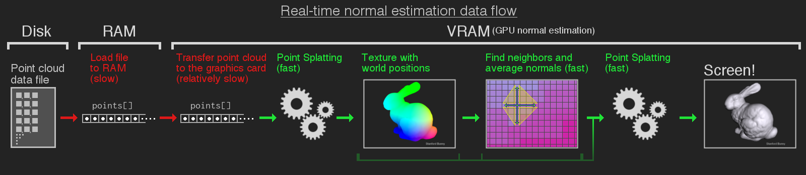

Comparing normal estimation methods for the rendering of unorganized point clouds
Ingemar Markström
3D Graphics crash course
Vectors and planes
- Vectors
- A vector \(\vec{v}=(x,y,z)\) is:
- … a coordinate somewhere in space.
- … the direction towards that point in space.
- Three non-equal points \([\vec{v_1}, \vec{v_2}, \vec{v_3}]\) make a triangle:
- A vector \(\vec{v}=(x,y,z)\) is:
- Planes
- \(\vec{t_1} = \vec{v_2}-\vec{v_1}\)
- \(\vec{t_2} = \vec{v_3}-\vec{v_1}\)
- All vectors \(\vec{p} = a*\vec{t_1} + b*\vec{t_2}\) outline a plane.
- The normal is then a perpendicular vector to the plane.
Small demo
Definition of unorganized point clouds?
An unorganized point cloud is:
- A collection of vectors \(P=[\vec{v_1},\vec{v_2},...,\vec{v_n}]\).
- No structure.
- No connectivity.
Point clouds in this thesis
Complex and real world point clouds originating from:
- Visionair Aim@Shape Digital Shape Workbench.
- Stanford Computer Graphics Laboratory.
- My own creations, including the reference point clouds of spheres, cubes, and cones.
Why this thesis
Why normals?
- Needed for proper light calculations.
- Also extremely useful in computer vision and object recognition.
- If they are missing, we need to calculate them!
Research question
What are the comparative costs and benefits of two different algorithms and their associated data structures: triangle averaging; and principal component analysis, when estimating normals in unorganized point clouds, measured by output quality and calculation time?
Summary overview
What is Inviwo?
Inviwo
Implementation wish list
Example of usage
Point splatting
Why?
- To few points to cover enough screen surface.
Why a new point splatting processor?
I wanted:
- Color-coded debug output of estimated normals.
- Possible use of at least one light source.
How
Point splatting variations? (1/2)

Point splatting variations? (2/2)
- Different shapes.
- Placements offsets and angle.
- Adaptive size to neighboring points.
Normal estimation
Different approaches to normal estimation from neighborhoods
The two categories are:
- Averaging methods.
- Optimization methods.
What we see on screen
A car:
What the computer see
The same car:
Finding \(k\) point neighbors in an unorganized point cloud
- Linear search is painfully slow (\(O(n^2*k)\)).
- Two main types of neighborhoods:
- Fixed size.
- All neighbors in a fixed radius.
- (Perhaps a combination of the above).
- Better data structure alternatives exist (Trees!), but which one to be used?
Summary of data structure research
- KD-tree:
- Balanced tree.
- Subdivides cells from the found median.
- Intuitive nearest neighbor querying.
- Oct-tree:
- Often used in game engines. (Fast collision detection, and pre-rendering culling of objects out of sight).
- Unbalanced version of the general KD-tree.
- Subdivides using the measured center of each cell instead of median, allowing predictable location calculation of neighboring cells.
- Equally spaced voxel grid:
- Intuitive neighboring voxel traversal.
- However, possibly many empty voxels.
KD-Tree
Averaging methods
Variations
- The number of triangles formed
- Fast triangulation (fTA) fan-disk, as in the video.
- Complete triangulation (cTA) of all possible triangles from neighbors.
- Weighting the different triangles formed.
- Triangle edge length.
- Triangle area.
Principal component analysis (PCA)
- Find the set of the \(k\) nearest neighboring points \(E=\left[ \vec{e_1},\vec{e_2},...,\vec{e_k} \right]\) to \(\vec{p_i}\).
- Create a covariance matrix from all the points in the neighborhood.
\begin{equation} C = \left[ \begin{matrix} cov(X,X) & cov(X,Y) & cov(X,Z) \\ cov(Y,X) & cov(Y,Y) & cov(Y,Z) \\ cov(Z,X) & cov(Z,Y) & cov(Z,Z) \end{matrix} \right] \end{equation} - Find the eigenvectors and eigenvalues (an orthogonal eigenbasis) of \(C\).
\begin{equation} \det\left(C - (\lambda I)\right) = 0 \end{equation} - The smallest eigenvalue correspond to the neighborhood normal!
When done on a 2D curve
Motivations for an offline approach
- Consistent repeatable evaluation was prioritized.
- Running time measurements would be stable.
- Numeric analysis results only dependent on neighborhood size.
Evaluation methods
Overview
- Running time with timing of both wall (and CPU) clock.
- Two approaches of evaluating the estimated normals:
- Image analysis.
- Convenient output performance overview.
- Quickly find problematic areas.
- Unfortunately subjective.
- Numerical analysis.
- Acts as a non-subjective reference to the image analysis.
- Determine between close calls.
- Image analysis.
Runtime analysis
- Steps that were measured:
- KD-tree initialization.
- Neighborhood querying.
- Normal estimation.
- Variables of interest:
- Point cloud size (number of points).
- Neighborhood size (number of neighbors).
- General point cloud structure.
- Threading gain (factor of single threads).
Image analysis
- The normal \(\vec{n} = \left\{n_x, n_y, n_z\right\}\) components range \([-1.0, 1.0]\).
- The Fragment color \(\vec{c} = \left\{c_r, c_g, c_b\right\}\) components range \([0.0, 1.0]\).
- Converting a normal to a unique color:
- \(\vec{c} = 0.5 \times \vec{n} + 0.5\)
Image analysis (Two main types of point clouds)
Normals image analysis
Compare the estimated normals to reference normals.
- For each pixel, output \(\vec{c_{grayscale}} = |\vec{c_{estimate}} - \vec{c_{original}}|\)
Model: Stanford bunny.
Numerical error analysis
- Visualize the distribution of error in the estimated normals.
- Bucket sort of absolute errors.

Results
KD-Tree initialization (1/3)
Neighborhood querying (2/3)
Wall Running-time (3/3)
| Aim@Shape Dragon | fTA (s) | cTA (s) | PCA (s) |
|---|---|---|---|
| K = 5 | 0.09 | 0.12 | 5.9 |
| K = 10 | 0.13 | 0.76 | 6.0 |
| K = 15 | 0.16 | 2.6 | 5.9 |
| K = 20 | 0.20 | 6.1 | 5.9 |
| K = 50 | 0.38 | 110 | 6.3 |
| K = 75 | 0.60 | 370 | 10 |
| K = 100 | 0.73 | 900 | 12 |
Image output analysis (Uniform point cloud)
Image output analysis (Uniform reference point clouds)
Image output analysis (issue of too many neighbors)
Image output analysis (Line-scan, too few neighbors)

Numerical analysis
Sphere:
Cube:
Stanford Bunny:
Aim@Shape Galaad:
Summary and Conclusions
Uniform point clouds
Line-scan point clouds
But there's more..!
Lets dive deeper into the flow of data
